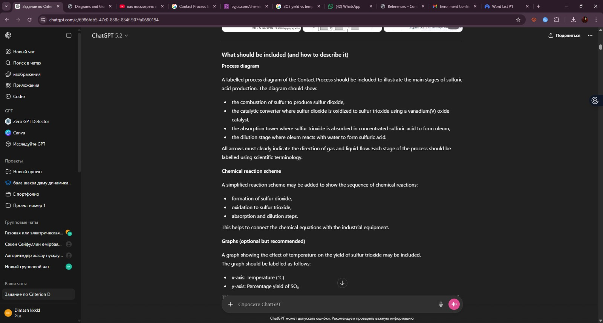

References & Appendix
References
-
Royal Society of Chemistry. (2022). The Contact Process.
https://www.rsc.org/ -
Clark, J. (2021). The manufacture of sulfuric acid. Chemguide.
https://www.chemguide.co.uk/ -
Encyclopaedia Britannica. (2023). Sulfuric acid.
https://www.britannica.com/science/sulfuric-acid - Austin, G. T. (2019). Shreve’s Chemical Process Industries (6th ed.). McGraw-Hill Education.
-
OpenAI. (2023). ChatGPT [Large language model].
https://chat.openai.com/
Appendix A. Dialogue with ChatGPT
ChatGPT was used to support this project by assisting with explanations of the Contact Process, chemical equations, interpretation of diagrams, and evaluation of economic and environmental impacts.

Appendix A. Extract from a dialogue with ChatGPT used to support explanations, diagrams, and evaluation of the Contact Process.